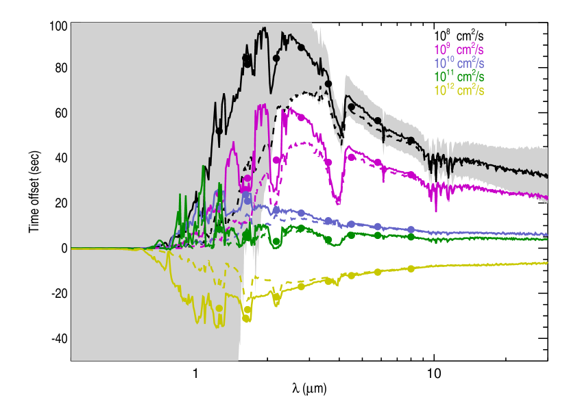
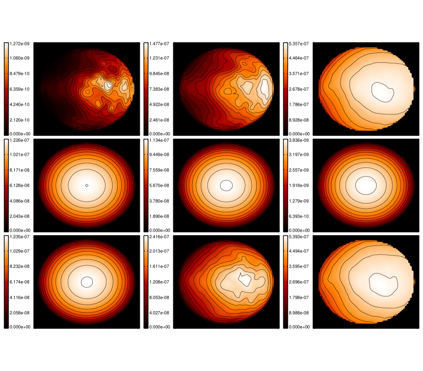

التوقيت الطيفي للكسوف
الملخص
نستخدم محاكاة متعددة الأبعاد لقوى مختلفة للتيار النفاث الاستوائي
للتنبؤ بالتغيرات المعتمدة على الطول الموجي في أزمنة الكسوف
للكواكب الغازية العملاقة. وتؤدي بقعة ساخنة مزاحة إلى إدخال
لاتماثل في منحنى ضوء الكسوف الثانوي يظهر على هيئة إزاحة مقاسة في
توقيت مركز الكسوف. إن رصد الكسوف الثانوي بأطوال موجية متعددة،
بحيث يسبر أحدها توقيت الكسوف الباريسنتري عند الأطوال الموجية
القصيرة ويسبر آخر الأطوال الموجية الأطول، سيكشف الإزاحة الطولية
للبقعة الساخنة ويفك التغاير بين هذا الأثر وبين الأثر المرتبط
باللاتماثل الناجم عن مدار شاذ المركز. وقد دُرس أثر الإزاحات
الزمنية أول مرة في نطاقات IRAC على يد
Williams et al. (2006). وهنا نحسن منهجيتهم، ونوسعها
إلى مجال واسع من الأطوال الموجية، ونبين تقنيتنا على سلسلة من
محاكاة إشعاعية-هيدروديناميكية متعددة الأبعاد للكوكب HD
 b مع قوى مختلفة للتيار النفاث الاستوائي وإزاحات
مختلفة للبقعة الساخنة. وتنتج المحاكاة ذات أكبر إزاحة للبقعة
الساخنة إزاحات توقيتية تصل إلى
b مع قوى مختلفة للتيار النفاث الاستوائي وإزاحات
مختلفة للبقعة الساخنة. وتنتج المحاكاة ذات أكبر إزاحة للبقعة
الساخنة إزاحات توقيتية تصل إلى  ثانية في
الأشعة تحت الحمراء. وعلى الرغم من أننا نستخدم نموذجا إشعاعيا
هيدروديناميكيا بعينه لإظهار هذا الأثر، فإن التقنية مستقلة عن
النموذج. وينبغي لهذه التقنية أن تتيح مسحا أوسع بكثير لإزاحات
البقع الساخنة باستخدام JWST مما هو متاح حاليا عبر منحنيات الطور
التي تتطلب زمنا رصديا طويلا، بما قد يلقي الضوء على الآليات
الفيزيائية المرتبطة بانتقال الطاقة الحرارية بالحمل في العمالقة
الغازية المشععة.
ثانية في
الأشعة تحت الحمراء. وعلى الرغم من أننا نستخدم نموذجا إشعاعيا
هيدروديناميكيا بعينه لإظهار هذا الأثر، فإن التقنية مستقلة عن
النموذج. وينبغي لهذه التقنية أن تتيح مسحا أوسع بكثير لإزاحات
البقع الساخنة باستخدام JWST مما هو متاح حاليا عبر منحنيات الطور
التي تتطلب زمنا رصديا طويلا، بما قد يلقي الضوء على الآليات
الفيزيائية المرتبطة بانتقال الطاقة الحرارية بالحمل في العمالقة
الغازية المشععة.
1. المقدمة
قدمت الكواكب الغازية العملاقة القصيرة الدورة، الشديدة التشعيع
والمفترض أنها مقيدة مديا، معلومات لا تقدر بثمن في سعينا إلى فهم
تكوّن الكواكب الخارجية وتطورها. ونظرا إلى ميلها إلى العبور وإلى
حجمها الملائم نسبة إلى نجومها المضيفة، فقد استخلصت منها رصديا
ثروة من المعلومات، ومن المرجح أن تبقى أفضل الكواكب الخارجية
توصيفا. غير أنها تختلف اختلافا كبيرا عن كواكبنا الغازية العملاقة.
وأبرز ما في ذلك تأثير الطاقة النجمية الساقطة، التي توفر ضياء أعلى
من الضياء الداخلي للكوكب بمقدار  مرة. ولا يزال
دور هذه الطاقة الساقطة في التأثير في تطور الكوكب وتشكيل السمات
القابلة للرصد مسألة مفتوحة، وهي مسألة حاسمة لتفسير وفهم الكم
الكبير من الأرصاد.
مرة. ولا يزال
دور هذه الطاقة الساقطة في التأثير في تطور الكوكب وتشكيل السمات
القابلة للرصد مسألة مفتوحة، وهي مسألة حاسمة لتفسير وفهم الكم
الكبير من الأرصاد.
يدرس عدد من المجموعات السلوك الجوي للكواكب الغازية العملاقة باستخدام نماذج إشعاعية-هيدروديناميكية متعددة الأبعاد. وللاطلاع على قائمة غير حصرية بالمجموعات والتقنيات المستخدمة انظر Dobbs-Dixon & Agol (2013); Heng & Showman (2014). ومع أن التفاصيل تختلف بين النماذج، فإن ثمة توافقا عاما على أن الكواكب الغازية العملاقة الشديدة التشعيع والمقيدة مديا تكوّن تيارات نفاثة استوائية عريضة، فوق صوتية، فائقة الدوران. وتفسر هذه التيارات النفاثة الاستوائية معظم انتقال الطاقة الديناميكية، وهي مسؤولة عن الفروق بين الحسابات الإشعاعية البحتة والفيضانات المرصودة فعلا.
بمعنى عام جدا، يمكن وصف كفاءة نقل الطاقة بواسطة تيار نفاث بمعلمتين: المقياس الزمني الإشعاعي، أي الزمن اللازم للتبرد، والمقياس الزمني الديناميكي، أي الزمن اللازم لانتقال المائع من النهار إلى الليل. 11 1 لاحظ أن Perez-Becker & Showman (2013) اقترحوا أنه على الرغم من أن الحمل هو آلية انتقال الحرارة، فإن العملية الفيزيائية التي تحكم كفاءة الحمل ترتبط بالمقياس الزمني لانتشار موجات الجاذبية. ونحن لا ننازع ذلك هنا، بل نستخدم الحمل، عبر المقياس الزمني الديناميكي، لتوضيح نقطة عامة. علاوة على ذلك، يبين Perez-Becker & Showman (2013) أنه في حد التأثير القسري القوي، الملائم للمشتريات الحارة، يكون استدعاء المقاييس الزمنية الحملية صحيحا تماما. وبالنسبة إلى هذه الكواكب، فإن المقارنة بين و تعطي نتائج تتفق مع محاكاتهم العددية. ونتوقع أن يكون هذان المقياسان الزمنيان متقاربين. فعلى سبيل المثال، لننظر في كوكب شديد التشعيع يكون فيه المقياس الزمني الإشعاعي أقصر كثيرا من المقياس الزمني الديناميكي؛ فسيبرد الغاز بكفاءة عالية أثناء انتقاله من النهار إلى الليل. غير أن غياب نقل الطاقة الحرارية إلى جهة الليل يعني أن فرق الضغط بين النهار والليل، وهو القوة المحركة الأساسية للرياح، سيكون كبيرا جدا. ومن شأن ذلك أن يقصر المقياس الزمني الديناميكي، مقربا إياه من المقياس الزمني الإشعاعي.
ومع استمرار ازدياد عدد الكواكب الغازية العملاقة القصيرة الدورة المكتشفة عابرة أمام نجومها المضيفة، يصبح بوسعنا البدء بإجراء مقارنات مفصلة مع تنبؤات النماذج الإشعاعية-الهيدروديناميكية متعددة الأبعاد. ومن أكثر مجموعات الأرصاد إظهارا لأهمية الديناميكيات منحنيات الطور الكاملة أو الجزئية للكواكب القصيرة الدورة في الأشعة تحت الحمراء. وعلى الرغم من أنها متوسطات على أنصاف كروية بالضرورة، فمن الممكن استخراج الاعتماد الطولي للانبعاث الحراري عبر سطح الكوكب (Cowan & Agol, 2008). ويمكن أن تعزى الفروق بين منحنيات الطور المرصودة وتلك المتنبأ بها من حساب اتزان إشعاعي إلى نقل الطاقة الحرارية بفعل ديناميكيات جوية قوية. ونظرا إلى دقة الأرصاد الحالية، فإن أكثر جوانب منحنى الطور دلالة هي موضع الفيض الأعظمي والأدنى، وفرق درجة الحرارة بين النهار والليل.
إن أدق منحنى طور حتى الآن هو رصد للكوكب
HD  b أجرته Knutson
et al. (2007, 2009); Knutson et al. (2012). وقد
وجدوا أن ذروة الانبعاث الحراري من الكوكب تحدث قبل الكسوف الثانوي
بمقدار ساعة، وهو ما يدل على حمل باتجاه الريح
بواسطة تيار نفاث استوائي قوي، وعلى فرق في درجة الحرارة بين
النهار والليل قدره K. غير أن الإزاحات وتباينات
درجة الحرارة بين النهار والليل ليست عامة. فقد رصد
Cowan
et al. (2007) تغيرات الطور لثلاثة كواكب عند و
و ، ووجدوا أن HD
b وحده أظهر أي تغير في الطور، في حين لم تظهر أرصاد HD
b أجرته Knutson
et al. (2007, 2009); Knutson et al. (2012). وقد
وجدوا أن ذروة الانبعاث الحراري من الكوكب تحدث قبل الكسوف الثانوي
بمقدار ساعة، وهو ما يدل على حمل باتجاه الريح
بواسطة تيار نفاث استوائي قوي، وعلى فرق في درجة الحرارة بين
النهار والليل قدره K. غير أن الإزاحات وتباينات
درجة الحرارة بين النهار والليل ليست عامة. فقد رصد
Cowan
et al. (2007) تغيرات الطور لثلاثة كواكب عند و
و ، ووجدوا أن HD
b وحده أظهر أي تغير في الطور، في حين لم تظهر أرصاد HD
 b (Zellem et al., 2014) و -Peg أي تغير،
مما يدل على إعادة توزيع للطاقة عالية الكفاءة. ومن المهم أن نلاحظ
أن منحنيات الطور هذه قليلة النقاط نسبيا وتتألف من أرصاد غير
متتابعة. أما أول منحنى طور للكوكب غير العابر
b (Zellem et al., 2014) و -Peg أي تغير،
مما يدل على إعادة توزيع للطاقة عالية الكفاءة. ومن المهم أن نلاحظ
أن منحنيات الطور هذه قليلة النقاط نسبيا وتتألف من أرصاد غير
متتابعة. أما أول منحنى طور للكوكب غير العابر  -Andromeda
(Harrington
et al., 2006; Crossfield et al., 2010) فيشير إلى فرق في درجة
الحرارة يتجاوز K وإزاحة للبقعة الساخنة مقدارها
.
-Andromeda
(Harrington
et al., 2006; Crossfield et al., 2010) فيشير إلى فرق في درجة
الحرارة يتجاوز K وإزاحة للبقعة الساخنة مقدارها
.
نركز في هذه الورقة على موضع البقعة الساخنة. ولا نفهم حاليا لماذا
تظهر بعض الكواكب إزاحات في البقعة الساخنة بينما لا تظهرها كواكب
أخرى. وكما نوقش أعلاه، ينبغي أن يرتبط ذلك في النهاية بتغيرات في
الكفاءتين الديناميكية والإشعاعية. غير أن هذا التفسير البسيط قد
لا يكون كافيا. فعلى سبيل المثال، قد يتوقع المرء أن ترتبط الإزاحة
الكبيرة للبقعة الساخنة بفرق صغير في درجة الحرارة. ويبدو أن هذه
الصورة تنطبق على HD  b بما له من إزاحة معتدلة
للبقعة الساخنة وفرق في درجة الحرارة يبلغ عدة مئات من الدرجات.
غير أن البقعة الساخنة على
b بما له من إزاحة معتدلة
للبقعة الساخنة وفرق في درجة الحرارة يبلغ عدة مئات من الدرجات.
غير أن البقعة الساخنة على  -Andromeda كبيرة جدا،
كما أن فرق درجة الحرارة هائل. وعلى أمل فهم أهمية التركيب، والفيض
الساقط، وما إلى ذلك في تحديد كفاءة انتقال الحرارة بواسطة الغلاف
الجوي، ستكون البيانات الإضافية على نحو كبير مفيدة للغاية. لكن
منحنيات الطور الكاملة أو نصف المدارية تستهلك زمنا تلسكوبيا كبيرا،
ومسح كثير من الأنظمة صعب. وهنا نستكشف تقنية لاستخراج الإزاحة
الطولية للبقعة الساخنة من رصد واحد متعدد الأطوال الموجية للكسوف
الثانوي، باستخدام التغيرات في زمن الكسوف الثانوي. ونوضح هذه
التقنية باستخدام نماذج إشعاعية هيدروديناميكية متعددة الأبعاد
للكوكب العملاق HD
-Andromeda كبيرة جدا،
كما أن فرق درجة الحرارة هائل. وعلى أمل فهم أهمية التركيب، والفيض
الساقط، وما إلى ذلك في تحديد كفاءة انتقال الحرارة بواسطة الغلاف
الجوي، ستكون البيانات الإضافية على نحو كبير مفيدة للغاية. لكن
منحنيات الطور الكاملة أو نصف المدارية تستهلك زمنا تلسكوبيا كبيرا،
ومسح كثير من الأنظمة صعب. وهنا نستكشف تقنية لاستخراج الإزاحة
الطولية للبقعة الساخنة من رصد واحد متعدد الأطوال الموجية للكسوف
الثانوي، باستخدام التغيرات في زمن الكسوف الثانوي. ونوضح هذه
التقنية باستخدام نماذج إشعاعية هيدروديناميكية متعددة الأبعاد
للكوكب العملاق HD  b للتنبؤ بإزاحات التوقيت بدلالة
الطول الموجي. في القسم (2) نناقش بإيجاز النماذج
متعددة الأبعاد، ونشرح كيفية استخراج خرائط الانبعاث من المحاكاة،
ونناقش تقنية حساب إزاحات التوقيت المعتمدة على الطول الموجي. وفي
القسم (3) نعرض تنبؤاتنا للكوكب HD
b للتنبؤ بإزاحات التوقيت بدلالة
الطول الموجي. في القسم (2) نناقش بإيجاز النماذج
متعددة الأبعاد، ونشرح كيفية استخراج خرائط الانبعاث من المحاكاة،
ونناقش تقنية حساب إزاحات التوقيت المعتمدة على الطول الموجي. وفي
القسم (3) نعرض تنبؤاتنا للكوكب HD
 b، ونناقش الترابط بين فروق التوقيت وإزاحات البقع
الساخنة. وقد اقترح Williams et al. (2006) أول مرة صيغة من هذه
التقنية، مستخدمين محاكاة Cooper &
Showman (2005) للتنبؤ بإزاحات
توقيت الكسوف، التي يشيرون إليها باسم الإزاحات الزمنية الموحدة، في
نطاقات IRAC الأربعة الخاصة بتلسكوب Spitzer. ونقارن طرائقنا
ونتائجنا بنتائجهم في القسم (3.1). وأخيرا، نناقش
إمكان إجراء مثل هذا القياس في ضوء القيود الآلاتية الحالية
والمستقبلية في القسم (3.2). ويختتم القسم
(4) بمناقشة عامة لنتائجنا.
b، ونناقش الترابط بين فروق التوقيت وإزاحات البقع
الساخنة. وقد اقترح Williams et al. (2006) أول مرة صيغة من هذه
التقنية، مستخدمين محاكاة Cooper &
Showman (2005) للتنبؤ بإزاحات
توقيت الكسوف، التي يشيرون إليها باسم الإزاحات الزمنية الموحدة، في
نطاقات IRAC الأربعة الخاصة بتلسكوب Spitzer. ونقارن طرائقنا
ونتائجنا بنتائجهم في القسم (3.1). وأخيرا، نناقش
إمكان إجراء مثل هذا القياس في ضوء القيود الآلاتية الحالية
والمستقبلية في القسم (3.2). ويختتم القسم
(4) بمناقشة عامة لنتائجنا.
2. حساب الكميات القابلة للرصد من نماذج 3D
لتوضيح مفهوم التغيرات في توقيت العبور الناجمة عن بقعة ساخنة مزاحة،
نركز على محاكاة الكوكب الغازي العملاق العابر HD
 b. ونبدأ بمناقشة موجزة لمحاكاتنا، ثم نشرح تقنية استخراج خرائط
الانبعاث القابلة للرصد، وأخيرا التقنية المستخدمة لحساب التغيرات
في توقيت العبور.
b. ونبدأ بمناقشة موجزة لمحاكاتنا، ثم نشرح تقنية استخراج خرائط
الانبعاث القابلة للرصد، وأخيرا التقنية المستخدمة لحساب التغيرات
في توقيت العبور.
2.1. المحاكاة الديناميكية
في Dobbs-Dixon et al. (2012) أجرينا محاكاة واسعة للكوكب HD b باستخدام نموذجنا الإشعاعي-الهيدروديناميكي متعدد الأبعاد. ويحل النموذج معادلات Navier-Stokes القابلة للانضغاط تماما في كامل الغلاف الجوي، من ضغوط إلى بار. وتقترن المعادلات الديناميكية بإيداع للطاقة النجمية يعتمد على الطول الموجي، وبانتقال إشعاعي عبر الانتشار المحدود بالفيض، وبمعادلة طاقة ذات درجتي حرارة. انظر Dobbs-Dixon et al. (2012) لمناقشة تقنيات الحل ومعلومات الدقة واختيارات المعلمات. وقد قارنا نتائجنا بأطياف العبور المرصودة، فوجدنا توافقا ممتازا، وتنبأنا بتغيرات توقيتية معتمدة على الطول الموجي في مركز العبور الأولي. لاحظ أن التغيرات في توقيت العبور الأولي التي نناقشها في Dobbs-Dixon et al. (2012) تختلف عما نعرضه هنا. فعلى الرغم من أن كليهما مرتبط بالديناميكيات، فإن الانحرافات أثناء العبور الأولي تنجم عن اختلافات في ارتفاع المقياس عند الحدين الشرقي والغربي، بينما تعود تغيرات توقيت الكسوف الثانوي المناقشة هنا أساسا إلى تغيرات في موضع البقعة الساخنة.
ولاستكشاف كفاءة التيار النفاث الاستوائي في إعادة توزيع الطاقة في الغلاف الجوي، أجرى Dobbs-Dixon et al. (2012) عددا من المحاكاة مع لزوجة تتغير من إلى . وتعمل اللزوجة آلية لتحويل الطاقة الحركية للتدفق ذاتيا وباتساق إلى طاقة حرارية، وتهدف إلى تمثيل أثر الصدمات، أو اللاتثابتات، أو مصادر أخرى للسحب غير المحلول على الجريان الجوي. وقد أدت اللزوجات الكبيرة إلى جريانات بطيئة، دون صوتية، من دون تكوين تيار نفاث، ومع فروق كبيرة في درجة الحرارة بين النهار والليل. ولم تفعل الديناميكيات الجوية في هذه المحاكاة إلا القليل لتغيير توزيع درجة الحرارة الإشعاعي، وبقيت النقطة الأشد حرارة على الكوكب قرب النقطة تحت النجمية. غير أننا عندما خفضنا اللزوجة وجدنا أن تيارات نفاثة استوائية فائقة الدوران وفوق صوتية تتكون، قادرة على نقل الطاقة بكفاءة إلى جهة الليل مع حمل البقعة الساخنة في الوقت نفسه باتجاه الريح، شرقي النقطة تحت النجمية. وكلما صغرت اللزوجة كبرت الإزاحة. ويعرض الشكل (3) من Dobbs-Dixon et al. (2012) توزيع درجة الحرارة والسرعة النطاقية عند الغلاف الضوئي للكوكب لمجال من اللزوجات. ومع أننا نستخدم هذه المحاكاة لتوضيح هذه الظاهرة، فإننا نؤكد أن التقنيات التي نقدمها مستقلة عن النموذج ويمكن تطبيقها على أي رصد للكسوف الثانوي.
2.2. الكميات القابلة للرصد
تزودنا الحسابات الإشعاعية-الهيدروديناميكية متعددة الأبعاد بتوزيع ثلاثي الأبعاد لدرجة الحرارة والكثافة في الغلاف الجوي كله، ويمكننا استخدامه لاستكشاف الظواهر الرصدية. وبمعرفة درجة الحرارة والكثافة، تتيح لنا عتامات الغاز المفصلة من Sharp & Burrows (2007) حساب أطياف الانبعاث والامتصاص المعتمدة على الطول الموجي، وكذلك منحنيات الطور. وما يهمنا أساسا في هذه الورقة هو خرائط الانبعاث المعتمدة على الطول الموجي من جهة النهار للكوكب. ويسهم مكونان في هذا الانبعاث: الانبعاث الحراري والضوء المشتت. ونناقش كلا منهما تباعا أدناه.
2.2.1 الانبعاث الحراري
لحساب الانبعاث الحراري من جهة النهار للكوكب نكامل إلى الداخل على امتداد أشعة موازية لخط البصر. وتعطى الشدة المعتمدة على الموضع واللازمة لحساب منحنى ضوء الكسوف الثانوي التفصيلي بالعلاقة
| (1) |
نفترض أن الغاز الجوي يشع كجسم أسود، تعطى شدته بالعلاقة
| (2) |
وتستوفى قيم الكثافة ودرجة الحرارة، المستخدمة في المعادلة
(2) واللازمة لحساب  في كل موضع،
من القيم المحسوبة في نماذج 3D. وأخيرا يمكن الحصول
على ضياء جهة النهار الظاهري الكلي بالتكامل على القرص المرصود
في كل موضع،
من القيم المحسوبة في نماذج 3D. وأخيرا يمكن الحصول
على ضياء جهة النهار الظاهري الكلي بالتكامل على القرص المرصود
| (3) |
حيث إن هو عنصر المساحة في مستوى الراصد.
2.2.2 الضوء المشتت
نفترض بياضا منتظما وتشتتا منتشرا للكوكب. ولحساب الضوء النجمي
الساقط المشتت من الكوكب، ننظر أولا في الشدة النوعية المنبعثة في
اتجاه الراصد. ويمكن كتابة الشدة المعتمدة على التردد والمشتتة من
كل خط طول ( ) وخط عرض (
) وخط عرض ( ) على الكوكب كما يلي
) على الكوكب كما يلي
حيث إن و هما البياض الكروي والبياض الهندسي على الترتيب. ويفهم أن الشدة المشتتة لا تكون ذات صلة إلا بخطوط الطول وخطوط العرض المعرضة كليهما للضوء النجمي والمرئية للراصد أثناء الكسوف؛ أي ضمن من النقطة تحت النجمية . ويأخذ الحد في الحسبان الزاوية بين العمودي المحلي والشدة النجمية الساقطة، .
ويمكن حساب الضوء المشتت نحو الراصد بتكامل المعادلة (2.2.2) على نصف الكرة المرئي كله، مع إضافة حد هندسي لمراعاة المساحة المرئية المختزلة وعنصر المساحة الكروي القياسي. وهذا يعطي الشدة المشتتة نحو الراصد،
| (5) |
وفي حد البياض الثابت مكانيا يمكن تكامل ذلك وكتابته بالصورة المعتادة كما يلي
| (6) |
والكسر الأخير هو دالة الطور اللامبرتية المعروفة. وفيما يلي نفترض بياضا ثابتا مكانيا. غير أن الحسابات النظرية (Lee et al., 2015) والأرصاد المتعددة (Demory et al., 2013; Esteves et al., 2014; Hu et al., 2015; Shporer & Hu, 2015) تشير إلى أن تغطية السحب قد لا تكون منتظمة مكانيا. وفي هذه الحالة يجب استخدام المعادلة (5) لمساهمة الضوء المشتت.
2.2.3 حساب إزاحات التوقيت
باستخدام السطوع السطحي الكلي للكوكب، نولد منحنيات ضوء محاكاة للكسوف الثانوي بالتكامل على الجزء المرئي من الكوكب في كل خطوة زمنية. واستخدمنا نصف قطر الكوكب ومعلمات المدار المشتقة في Torres et al. (2008). وبعد حساب منحنيات الضوء المحاكاة المعتمدة على الطول الموجي، نستخدم التقنية الرصدية القياسية لملاءمتها بنموذج كسوف ثانوي يفترض سطوعا سطحيا منتظما للكوكب (Mandel & Agol, 2002). ولو كان الكوكب في اتزان إشعاعي لتزامن زمن منتصف الكسوف العابر مع منتصف الكسوف الثانوي الباريسنتري. أما الانحراف في سطوع سطح الكوكب فيعطي ما يسمى “الإزاحة الزمنية الموحدة” (Williams et al., 2006)؛ وهي تقابل الزمن الاصطناعي المستنتج باستخدام نموذج انبعاث كوكبي غير ملائم، أي منتظم.
3. إزاحات التوقيت المتنبأ بها
باستخدام محاكاة الكوكب HD  b من
Dobbs-Dixon et al. (2012) والتقنيات الموصوفة في القسم
(2)، نحسب التغير في زمن الكسوف المركزي. ويوضح الشكل
(1) نتائجنا لنماذج ذات لزوجة وقوة تيار نفاث
متغيرتين، باستخدام كل من الانبعاث الحراري والضوء المشتت،
. وكما هو متوقع، ترتبط اللزوجات الأصغر والتيارات
النفاثة الاستوائية الأقوى بإزاحات توقيتية أكبر. وبالنسبة إلى
المحاكاة ذات الإزاحات الكبيرة للبقعة الساخنة، نتنبأ بإزاحات
توقيتية تصل إلى ثانية عند . وعند
الأطوال الموجية الأطول، يبين الشكل (1) اتجاها عاما
نحو زيادة إزاحة التوقيت مع تناقص الطول الموجي. وينتج ذلك من
ازدياد عدم التجانس المكاني، أو الترقيع، في الانبعاث عند الأطوال
الموجية الأقصر (انظر الشكل 2). فبسبب الانحدار
الشديد لطيف الانبعاث في ذيل Wien، تؤدي تغيرات صغيرة في درجة حرارة
الغاز إلى تغيرات كبيرة في الانبعاث، مما ينتج انبعاثا مرقعا
وإزاحات توقيتية كبيرة. ويصبح هذا الأثر أوضح عند الأطوال الموجية
الأقصر. غير أن الضوء المشتت، وهو متناظر بطبيعته وفق افتراضاتنا،
يعمل على إخماد أي إزاحات توقيتية تظهر عند أطوال موجية أقصر. وفي
الحسابات التي تفترض بياضا صغيرا () يقع حد القطع
هذا تقريبا عند ، أما الحسابات التي تفترض بياضا
أكبر () فيكون طول موجة القطع فيها أطول بعض الشيء،
عند . لاحظ أننا، مع أننا ندرج آثار البياض في
تنبؤات التوقيت، لم نعدل إيداع الطاقة النجمية في المحاكاة متعددة
الأبعاد تعديلا ذاتي الاتساق. فكل المحاكاة تفترض بياضا صفريا،
بينما يستخدم بياض غير صفري في المعالجة اللاحقة للأغلفة الجوية
المحاكاة باستخدام شيفرة الانتقال الإشعاعي لدينا. ومن ثم يحدث خطأ
صغير في درجة حرارة الكوكب من رتبة ؛ وسيؤثر ذلك
في نتائجنا كميا، لكننا نتوقع أن يلتقط السمات النوعية نفسها التي
يعطيها حساب ذاتي الاتساق بالكامل. وترتبط السمات التفصيلية
المشاهدة في جميع المنحنيات في الشكل (1) بقمم في
العتامة، تعود أساسا إلى الماء. وتعني العتامة الأكبر أننا نسبر
طبقات أعلى في الغلاف الجوي حيث تكون لاتماثلات الكوكب أكبر، في حين
تسبر الأطوال الموجية الموافقة لعتامات أصغر مناطق أعمق وأكثر
تناظرا من الغلاف الجوي، مما يؤدي إلى إزاحات زمنية أصغر. وفي
الجدول (1) نفصل إزاحات توقيت الكسوف المتوسطة
على نطاقات J و H و K و IRAC ونطاقات مرشحات تلسكوب James Webb Space
Telescope (JWST) المقترحة.
b من
Dobbs-Dixon et al. (2012) والتقنيات الموصوفة في القسم
(2)، نحسب التغير في زمن الكسوف المركزي. ويوضح الشكل
(1) نتائجنا لنماذج ذات لزوجة وقوة تيار نفاث
متغيرتين، باستخدام كل من الانبعاث الحراري والضوء المشتت،
. وكما هو متوقع، ترتبط اللزوجات الأصغر والتيارات
النفاثة الاستوائية الأقوى بإزاحات توقيتية أكبر. وبالنسبة إلى
المحاكاة ذات الإزاحات الكبيرة للبقعة الساخنة، نتنبأ بإزاحات
توقيتية تصل إلى ثانية عند . وعند
الأطوال الموجية الأطول، يبين الشكل (1) اتجاها عاما
نحو زيادة إزاحة التوقيت مع تناقص الطول الموجي. وينتج ذلك من
ازدياد عدم التجانس المكاني، أو الترقيع، في الانبعاث عند الأطوال
الموجية الأقصر (انظر الشكل 2). فبسبب الانحدار
الشديد لطيف الانبعاث في ذيل Wien، تؤدي تغيرات صغيرة في درجة حرارة
الغاز إلى تغيرات كبيرة في الانبعاث، مما ينتج انبعاثا مرقعا
وإزاحات توقيتية كبيرة. ويصبح هذا الأثر أوضح عند الأطوال الموجية
الأقصر. غير أن الضوء المشتت، وهو متناظر بطبيعته وفق افتراضاتنا،
يعمل على إخماد أي إزاحات توقيتية تظهر عند أطوال موجية أقصر. وفي
الحسابات التي تفترض بياضا صغيرا () يقع حد القطع
هذا تقريبا عند ، أما الحسابات التي تفترض بياضا
أكبر () فيكون طول موجة القطع فيها أطول بعض الشيء،
عند . لاحظ أننا، مع أننا ندرج آثار البياض في
تنبؤات التوقيت، لم نعدل إيداع الطاقة النجمية في المحاكاة متعددة
الأبعاد تعديلا ذاتي الاتساق. فكل المحاكاة تفترض بياضا صفريا،
بينما يستخدم بياض غير صفري في المعالجة اللاحقة للأغلفة الجوية
المحاكاة باستخدام شيفرة الانتقال الإشعاعي لدينا. ومن ثم يحدث خطأ
صغير في درجة حرارة الكوكب من رتبة ؛ وسيؤثر ذلك
في نتائجنا كميا، لكننا نتوقع أن يلتقط السمات النوعية نفسها التي
يعطيها حساب ذاتي الاتساق بالكامل. وترتبط السمات التفصيلية
المشاهدة في جميع المنحنيات في الشكل (1) بقمم في
العتامة، تعود أساسا إلى الماء. وتعني العتامة الأكبر أننا نسبر
طبقات أعلى في الغلاف الجوي حيث تكون لاتماثلات الكوكب أكبر، في حين
تسبر الأطوال الموجية الموافقة لعتامات أصغر مناطق أعمق وأكثر
تناظرا من الغلاف الجوي، مما يؤدي إلى إزاحات زمنية أصغر. وفي
الجدول (1) نفصل إزاحات توقيت الكسوف المتوسطة
على نطاقات J و H و K و IRAC ونطاقات مرشحات تلسكوب James Webb Space
Telescope (JWST) المقترحة.

 b ذات لزوجات وقوى تيار نفاث مختلفة. حُسبت
الخطوط المتصلة بافتراض بياض قدره
b ذات لزوجات وقوى تيار نفاث مختلفة. حُسبت
الخطوط المتصلة بافتراض بياض قدره  ، في حين تفترض
الخطوط المتقطعة قيمة قدرها
، في حين تفترض
الخطوط المتقطعة قيمة قدرها  . وتعرض النقاط المصمتة
الإزاحات الزمنية المتوسطة على النطاقات الواردة في الجدول
(1). وتبين المنطقة المظللة امتداد أخطاء الرصد
في الإزاحة الزمنية لكوكب لزوجته
. وتعرض النقاط المصمتة
الإزاحات الزمنية المتوسطة على النطاقات الواردة في الجدول
(1). وتبين المنطقة المظللة امتداد أخطاء الرصد
في الإزاحة الزمنية لكوكب لزوجته  حول نجم شبيه
بالشمس على بعد
حول نجم شبيه
بالشمس على بعد  فرسخا فلكيا كما يشاهد بواسطة
JWST (انظر المناقشة في القسم (3.2)).
فرسخا فلكيا كما يشاهد بواسطة
JWST (انظر المناقشة في القسم (3.2)).ولزيادة توضيح المساهمات النسبية للضوء المشتت والانبعاث الحراري،
نعرض خرائط شدة من جهة النهار للكوكب لمجال من الأطوال الموجية في
الشكل (2). ويعرض الصف العلوي مساهمة الانبعاث
الحراري، والصف الأوسط مساهمة الضوء المشتت، أما الصف السفلي فيعرض
المجموع. وتحسب خرائط الانبعاث الحراري باستخدام محاكاة اللزوجة
الأدنى ( )، بينما تفترض خرائط الضوء المشتت بياضا
قدره
)، بينما تفترض خرائط الضوء المشتت بياضا
قدره  . وعند (العمود الأيسر)
تظهر ذروة الانبعاث الحراري إزاحة كبيرة، لكنها أصغر من الضوء
المشتت برتب مقدارية وتُحجب تماما في الانبعاث الكلي. وعند
(العمود الأيمن) يكون الانبعاث الحراري مزاحا
أيضا، وإن لم يكن متمركزا بالقوة نفسها، ويكون أسطع من الضوء المشتت
بعدة رتب مقدارية. ومن ثم يهيمن المكون الحراري على الانبعاث الكلي.
وعند الأطوال الموجية المتوسطة (، العمود الأوسط)
تكون الشدتان الحرارية والمشتتة متقاربتين، فتنجذب ذروة الانبعاث
الكلي الناتجة عائدة نحو النقطة تحت النجمية.
. وعند (العمود الأيسر)
تظهر ذروة الانبعاث الحراري إزاحة كبيرة، لكنها أصغر من الضوء
المشتت برتب مقدارية وتُحجب تماما في الانبعاث الكلي. وعند
(العمود الأيمن) يكون الانبعاث الحراري مزاحا
أيضا، وإن لم يكن متمركزا بالقوة نفسها، ويكون أسطع من الضوء المشتت
بعدة رتب مقدارية. ومن ثم يهيمن المكون الحراري على الانبعاث الكلي.
وعند الأطوال الموجية المتوسطة (، العمود الأوسط)
تكون الشدتان الحرارية والمشتتة متقاربتين، فتنجذب ذروة الانبعاث
الكلي الناتجة عائدة نحو النقطة تحت النجمية.

| Band | Williams | |||||
|---|---|---|---|---|---|---|
| J | 51.9 | 24.0 | 18.4 | 8.4 | -26.7 | - |
| H | 81.4 | 31.0 | 20.8 | 4.8 | -27.2 | - |
| Ks | 84.1 | 39.0 | 16.7 | 3.0 | -21.6 | - |
| F162M | 84.2 | 25.9 | 23.7 | 6.0 | -31.0 | - |
| F277W | 88.9 | 57.9 | 15.5 | 8.8 | -17.0 | - |
| IRAC1 | 72.8 | 39.0 | 12.1 | 3.7 | -14.7 | 53.0 |
| IRAC2 | 62.6 | 40.2 | 10.6 | 5.7 | -12.2 | 49.5 |
| IRAC3 | 56.5 | 38.0 | 9.5 | 5.7 | -10.6 | 44.0 |
| IRAC4 | 47.8 | 32.5 | 8.2 | 5.0 | -9.2 | 37.5 |
 إلى
إلى
 . ويسرد العمود الأخير نتائج محاكاتنا
باستخدام منهجية
Williams et al. (2006).
. ويسرد العمود الأخير نتائج محاكاتنا
باستخدام منهجية
Williams et al. (2006).3.1. مقارنة مع Williams et al. (2006)
كان Williams et al. (2006) أول من اقترح دراسة أثر البقعة الساخنة المزاحة في زمن مركز الكسوف. وقد أشاروا إلى هذه الظاهرة باسم الإزاحة الزمنية الموحدة، وتنبأوا بإشارات قدرها ، ، ، و ثانية لنطاقات IRAC ، واستكشفوا احتمال مثل هذا الكشف. وتختلف تنبؤاتنا الحالية عن تنبؤات Williams et al. (2006) بثلاث طرائق مهمة: المنهج والحل الإشعاعيان-الهيدروديناميكيان الأساسيان، وطريقة حساب خرائط الشدة، ومجال الأطوال الموجية المدروس. ومع أن النقطة الأخيرة هي الأهم، فإننا نستعرض كل نقطة منها تباعا أدناه.
أول فرق بين تنبؤات Williams et al. (2006) وما نعرضه هنا هو أن النموذج الإشعاعي-الهيدروديناميكي المتعدد الأبعاد الأساسي المستخدم لتوليد التنبؤات مختلف. فقد استخدموا نتائج نموذج Cooper & Showman (2005)، وهو نموذج دوران عام (GCM) يحل المعادلات الأولية المقترنة بمخطط تبريد نيوتني مبسط. ويتنبأ Cooper & Showman (2005) بإزاحة للبقعة الساخنة قدرها في خط الطول عند الغلاف الضوئي المتوسط على الأطوال الموجية. أما محاكاتنا الموصوفة بالتفصيل في القسم (2.1)، فتستخدم شيفرة عددية مختلفة كثيرا ويمكن أن تنتج مجالا من إزاحات البقع الساخنة المرتبطة بتغير اللزوجة.
أما الفرق الثاني فهو طريقة إنتاج خريطة الشدة. ففي
Williams et al. (2006) استخدموا حسابات Fortney et al. (2005) لتحديد
ضغوط تقريبية توافق الغلاف الضوئي للكوكب عند رؤيته في كل واحد من
نطاقات IRAC الأربعة (،  ،
،  ، و
ملي بار للنطاقات IRAC1 حتى IRAC4). ثم حددوا
درجة الحرارة المقابلة عند كل خط عرض وخط طول، وافترضوا أن كل رقعة
من الكوكب تشع كجسم أسود، وجمعوا كل المساهمات للحصول على الانبعاث
الحراري الكلي. في هذا العمل، وكما وصف في القسم
(2.2)، نكامل مساهمات الانبعاث على امتداد خط البصر،
وبذلك نأخذ في الحسبان أن مسار الضوء يصبح غير شعاعي على نحو متزايد
كلما اقتربنا من حافة الكوكب. ولا يأتي الفيض المنبعث ببساطة من ضغط
واحد، بل من مجال حول سطح المرتبط بدالة المساهمة
(Chamberlain &
Hunten, 1987; Knutson
et al., 2009) أثناء التكامل على
المسار. كما ندرج المساهمة المهمة للضوء المشتت. وعلى الرغم من أن
ذلك غير ذي أهمية في نطاقات IRAC الأطول موجة، فإنه ضروري لإدراج
الضوء المشتت عند الأطوال الموجية القريبة من
ودونها. وكان الافتراض الأولي في المجتمع العلمي عموما أن الكسوفات
الثانوية البصرية لن تكون قابلة للرصد إطلاقا، ولعل ذلك يفسر عدم
إدراج Williams لها. غير أننا نجد، خصوصا للكواكب شديدة السخونة مثل
Wasp-12b (Hebb et al., 2009)، أن إدراج الضوء المشتت ضروري دون
، و
ملي بار للنطاقات IRAC1 حتى IRAC4). ثم حددوا
درجة الحرارة المقابلة عند كل خط عرض وخط طول، وافترضوا أن كل رقعة
من الكوكب تشع كجسم أسود، وجمعوا كل المساهمات للحصول على الانبعاث
الحراري الكلي. في هذا العمل، وكما وصف في القسم
(2.2)، نكامل مساهمات الانبعاث على امتداد خط البصر،
وبذلك نأخذ في الحسبان أن مسار الضوء يصبح غير شعاعي على نحو متزايد
كلما اقتربنا من حافة الكوكب. ولا يأتي الفيض المنبعث ببساطة من ضغط
واحد، بل من مجال حول سطح المرتبط بدالة المساهمة
(Chamberlain &
Hunten, 1987; Knutson
et al., 2009) أثناء التكامل على
المسار. كما ندرج المساهمة المهمة للضوء المشتت. وعلى الرغم من أن
ذلك غير ذي أهمية في نطاقات IRAC الأطول موجة، فإنه ضروري لإدراج
الضوء المشتت عند الأطوال الموجية القريبة من
ودونها. وكان الافتراض الأولي في المجتمع العلمي عموما أن الكسوفات
الثانوية البصرية لن تكون قابلة للرصد إطلاقا، ولعل ذلك يفسر عدم
إدراج Williams لها. غير أننا نجد، خصوصا للكواكب شديدة السخونة مثل
Wasp-12b (Hebb et al., 2009)، أن إدراج الضوء المشتت ضروري دون
 . والفرق الأخير هو أننا نستكشف إزاحات توقيت الكسوف
على مجال أوسع بكثير من الأطوال الموجية. ومع أن ذلك قد يبدو أمرا
بسيطا، فإننا نقترح أن القياس الفعلي لهذا الأثر سيتطلب قياسا
تفاضليا بين طولين موجيين أو أكثر. إذ لا يمكن تحديد الكسوف
الباريسنتري من السرعات الشعاعية بدقة كافية لتعيين الإزاحة من طول
موجي واحد. وبتوسيع تغطيتنا الطولية الموجية، يمكن للراصدين اختيار
منطقتين موجيتين لهما فروق توقيتية عظمى، مما يعطي بصمة قد تكون
قابلة للرصد.
. والفرق الأخير هو أننا نستكشف إزاحات توقيت الكسوف
على مجال أوسع بكثير من الأطوال الموجية. ومع أن ذلك قد يبدو أمرا
بسيطا، فإننا نقترح أن القياس الفعلي لهذا الأثر سيتطلب قياسا
تفاضليا بين طولين موجيين أو أكثر. إذ لا يمكن تحديد الكسوف
الباريسنتري من السرعات الشعاعية بدقة كافية لتعيين الإزاحة من طول
موجي واحد. وبتوسيع تغطيتنا الطولية الموجية، يمكن للراصدين اختيار
منطقتين موجيتين لهما فروق توقيتية عظمى، مما يعطي بصمة قد تكون
قابلة للرصد.
ولاختبار أهمية التقنية المستخدمة عند إنتاج خريطة انبعاث للكوكب،
أنتجنا منحنيات ضوء IRAC باستخدام إشعاع الجسم الأسود المرتبط
بسطوح ضغط ثابتة قدرها  و
و  و
و
و
و  ملي بار، متبعين تقنية
Williams et al. (2006)، وذلك باستخدام محاكاتنا ذات اللزوجة الأدنى
(). وهذه الضغوط مأخوذة من Fortney et al. (2005) بوصفها
الضغوط المتوسطة المرتبطة بالأغلفة الضوئية في IRAC. وترد التنبؤات
المرتبطة بسطوح الضغط الثابت في العمود الأخير من الجدول
(1)، وينبغي مقارنتها بالقيم في العمود الأول. وعلى
الرغم من وجود توافق جيد إلى حد معقول، فإن طريقتنا في تتبع الأشعة
غير الشعاعي لحساب خرائط الانبعاث الحراري تعطي إزاحات توقيتية أكبر
منهجيا بمقدار ثوان مقارنة باستخدام طريقة الضغط
الثابت. ويمكن فهم ذلك بالنظر إلى الموضع الذي يأتي منه الفيض
المرصود فعليا في الكوكب. فكلما ابتعدنا عن النقطة تحت الراصدية
تنتقل دالة المساهمة، أي المنطقة التي تنشأ منها الفوتونات، إلى
ضغوط أخفض فأخفض. وبعبارة أخرى، عند تكامل مسار الفوتون عكسيا على
امتداد الهندسة المائلة الصحيحة، بدلا من مسار عمودي على سطح الكوكب،
ستبلغ سطح بسرعة أكبر بكثير. لذلك، كلما اقتربت
من حافة الكوكب فإنك تنظر إلى مواضع أعلى في الغلاف الجوي، حيث يكون
لإعادة التوزيع الديناميكي دور أكبر على نحو متزايد. ولم نمد تحليل
الضغط الثابت إلى الأطوال الموجية الأقصر، إذ إن الطرائق تختلف
اختلافا كبيرا عند أطوال أقصر من
ملي بار، متبعين تقنية
Williams et al. (2006)، وذلك باستخدام محاكاتنا ذات اللزوجة الأدنى
(). وهذه الضغوط مأخوذة من Fortney et al. (2005) بوصفها
الضغوط المتوسطة المرتبطة بالأغلفة الضوئية في IRAC. وترد التنبؤات
المرتبطة بسطوح الضغط الثابت في العمود الأخير من الجدول
(1)، وينبغي مقارنتها بالقيم في العمود الأول. وعلى
الرغم من وجود توافق جيد إلى حد معقول، فإن طريقتنا في تتبع الأشعة
غير الشعاعي لحساب خرائط الانبعاث الحراري تعطي إزاحات توقيتية أكبر
منهجيا بمقدار ثوان مقارنة باستخدام طريقة الضغط
الثابت. ويمكن فهم ذلك بالنظر إلى الموضع الذي يأتي منه الفيض
المرصود فعليا في الكوكب. فكلما ابتعدنا عن النقطة تحت الراصدية
تنتقل دالة المساهمة، أي المنطقة التي تنشأ منها الفوتونات، إلى
ضغوط أخفض فأخفض. وبعبارة أخرى، عند تكامل مسار الفوتون عكسيا على
امتداد الهندسة المائلة الصحيحة، بدلا من مسار عمودي على سطح الكوكب،
ستبلغ سطح بسرعة أكبر بكثير. لذلك، كلما اقتربت
من حافة الكوكب فإنك تنظر إلى مواضع أعلى في الغلاف الجوي، حيث يكون
لإعادة التوزيع الديناميكي دور أكبر على نحو متزايد. ولم نمد تحليل
الضغط الثابت إلى الأطوال الموجية الأقصر، إذ إن الطرائق تختلف
اختلافا كبيرا عند أطوال أقصر من  بسبب مساهمتنا
المضافة من الضوء المشتت. ومن المهم التأكيد أننا لا نستطيع مقارنة
نتائجنا مباشرة بتلك الواردة في Williams et al. (2006) لأن النماذج
الإشعاعية-الهيدروديناميكية الأساسية، ومن ثم توزيعات الضغط ودرجة
الحرارة، مختلفة. وحساباتنا لخرائط الضغط الثابت مشتقة من محاكاة
Dobbs-Dixon et al. (2012).
بسبب مساهمتنا
المضافة من الضوء المشتت. ومن المهم التأكيد أننا لا نستطيع مقارنة
نتائجنا مباشرة بتلك الواردة في Williams et al. (2006) لأن النماذج
الإشعاعية-الهيدروديناميكية الأساسية، ومن ثم توزيعات الضغط ودرجة
الحرارة، مختلفة. وحساباتنا لخرائط الضغط الثابت مشتقة من محاكاة
Dobbs-Dixon et al. (2012).
3.2. الإمكانات الرصدية
لاستكشاف إمكان قياس إزاحة زمنية في الكسوف الثانوي ناجمة عن آثار
الدوران الجوي، نستخدم منحنيات كسوف عددية لحساب الدقة الضوئية
اللازمة لبلوغ خطأ توقيت معين. ونبني منحنيي كسوف باستخدام طريقة
Mandel &
Agol (2002)، مع تطبيعهما إلى الواحد أثناء الكسوف، أي
عند رصد النجم وحده. ويمثل أحد منحنيي الكسوف الكسوف الباريسنتري،
ويمثل الآخر منحنى مزاحا زمنيا بمقدار  ثانية. ثم
نطرح هذين المنحنيين ونحسب الانحراف المعياري للفرق الضوئي. ويمثل
ذلك الانحراف المعياري مستوى الخطأ الضوئي اللازم لكشف إزاحة قدرها
ثانية. ثم
نطرح هذين المنحنيين ونحسب الانحراف المعياري للفرق الضوئي. ويمثل
ذلك الانحراف المعياري مستوى الخطأ الضوئي اللازم لكشف إزاحة قدرها
 ثانية، إلى دقة . وتحققنا من حسابنا
بمقارنته بالصيغ التحليلية التي قدمها Carter et al. (2008)، في
(معادلتهم 23)، فوجدنا توافقا في حدود 3 في
المئة. ويتسق هذا المستوى من التوافق مع الفرق بين شكل منحنى الكسوف
الذي اعتمدناه Mandel &
Agol (2002)، والشكل شبه المنحرف الموضح في
الشكل 1 من Carter et al. (2008).
ثانية، إلى دقة . وتحققنا من حسابنا
بمقارنته بالصيغ التحليلية التي قدمها Carter et al. (2008)، في
(معادلتهم 23)، فوجدنا توافقا في حدود 3 في
المئة. ويتسق هذا المستوى من التوافق مع الفرق بين شكل منحنى الكسوف
الذي اعتمدناه Mandel &
Agol (2002)، والشكل شبه المنحرف الموضح في
الشكل 1 من Carter et al. (2008).
ولحساب مستوى الخطأ الضوئي المرصود مقارنة بمستوى الخطأ المطلوب
المعرف أعلاه، افترضنا أن ضجيج عد بواسون يهيمن على الارتيابات
الضوئية. وبالفعل، حققت أرصاد Spitzer دقة قريبة من ضجيج الرمي
(Deming
et al., 2014, e.g.). واستخدمنا نماذج ATLAS النجمية
(Castelli &
Kurucz, 2003) لحساب فيض الفوتونات عند JWST، واعتمدنا مساحة
تلسكوب قدرها ، ونفاذية، أي عدد الإلكترونات الخارجة
مقسوما على عدد الفوتونات الداخلة، قدرها  ، وعرض
نطاق مرشح قدره
، وعرض
نطاق مرشح قدره  .
.
وفي الشكل (3) نعرض نسبة الإشارة إلى الضجيج لإزاحة
التوقيت نفسها بدلالة الطول الموجي، استنادا إلى إزاحات التوقيت
النموذجية من الشكل (1)، لكوكب يكسفه نجم شبيه
بالشمس على بعد  فرسخا فلكيا. وينتج شكل هذا المنحنى
من تضافر عدد الفوتونات القادمة من الكوكب، كما سبق، وحجم إزاحة
التوقيت. وتبلغ قيم نسبة الإشارة إلى الضجيج للتوقيت ذروتها عند
عند ، وهي قابلة للكشف بواسطة JWST،
ولا سيما عند جمع أرصاد متعددة. ونبين الأخطاء المتوقعة المرتبطة
بهذه النسبة في الشكل (1) على هيئة منطقة مظللة
للنموذج ذي اللزوجة
فرسخا فلكيا. وينتج شكل هذا المنحنى
من تضافر عدد الفوتونات القادمة من الكوكب، كما سبق، وحجم إزاحة
التوقيت. وتبلغ قيم نسبة الإشارة إلى الضجيج للتوقيت ذروتها عند
عند ، وهي قابلة للكشف بواسطة JWST،
ولا سيما عند جمع أرصاد متعددة. ونبين الأخطاء المتوقعة المرتبطة
بهذه النسبة في الشكل (1) على هيئة منطقة مظللة
للنموذج ذي اللزوجة  . ومع أن الأخطاء هائلة عند
أطوال موجية أصغر من نحو ، وذلك أساسا بسبب نقص
الفوتونات، فإنها معقولة عند الأطوال الموجية الأطول. لاحظ أن
المنحنى في الشكل (1) تنبؤ نظري، ومن ثم فهو مستقل
عن الدقة الرصدية. أما الأرصاد الفعلية فستنتج دقة أقل بكثير. وبعد
إجراء رصد معين، يمكن تجميع البيانات النظرية في صناديق مناسبة
للمقارنة.
. ومع أن الأخطاء هائلة عند
أطوال موجية أصغر من نحو ، وذلك أساسا بسبب نقص
الفوتونات، فإنها معقولة عند الأطوال الموجية الأطول. لاحظ أن
المنحنى في الشكل (1) تنبؤ نظري، ومن ثم فهو مستقل
عن الدقة الرصدية. أما الأرصاد الفعلية فستنتج دقة أقل بكثير. وبعد
إجراء رصد معين، يمكن تجميع البيانات النظرية في صناديق مناسبة
للمقارنة.
 على JWST ونطاقا قدره
على JWST ونطاقا قدره
 . وتؤخذ إزاحات التوقيت من الشكل(1)
لمحاكاة اللزوجة الأدنى، مع افتراض بياض قدره
. وتؤخذ إزاحات التوقيت من الشكل(1)
لمحاكاة اللزوجة الأدنى، مع افتراض بياض قدره  .
.4. الاستنتاجات
نقترح في هذه الورقة طريقة لتحديد الإزاحة الأفقية للبقعة الساخنة على كوكب غازي عملاق شديد التشعيع ومقيد مديا. فالبقعة الساخنة المزاحة عن النقطة تحت النجمية ستدخل لاتماثلا في منحنى ضوء الكسوف الثانوي، وعند ملاءمته باستخدام نموذج يفترض كوكبا متناظرا سيظهر هذا اللاتماثل على هيئة إزاحة توقيتية في مركز الكسوف المحسوب. ومن حيث المبدأ، يمكن إجراء هذا القياس باستخدام رصد واحد متعدد الأطوال الموجية للكسوف الثانوي. ومن الضروري رصد الكسوف عند أطوال موجية متعددة لمقارنة إزاحات التوقيت المحسوبة وفك التغاير المرتبط بمدار شاذ المركز، إذ إن مركز العبور الباريسنتري المتنبأ به من منحنيات السرعة الشعاعية غير معروف بدقة كافية.
وعلى الرغم من أن الطريقة المقترحة في هذه الورقة مستقلة عن النموذج،
فقد استخدمنا محاكاة إشعاعية-هيدروديناميكية من
Dobbs-Dixon et al. (2012) للكوكب HD  b لإيضاح هذه
الطريقة أكثر والتنبؤ بإزاحات التوقيت. وتطور المحاكاة تيارات
نفاثة استوائية فائقة الدوران تعيد توزيع الطاقة من النهار إلى
الليل وتزيح البقعة الساخنة عن النقطة تحت النجمية. وقد شغل
Dobbs-Dixon et al. (2012) محاكاة لمجال من اللزوجات، مما أدى إلى قوى
تيار نفاث وكفاءات حملية مختلفة. وتبقى البقع الساخنة في المحاكاة
التي لا تطور تيارا نفاثا محيطا بالكوكب، أو تطوره بدرجة قليلة، قرب
النقطة تحت النجمية، مما يؤدي إلى إزاحة زمنية متنبأ بها صغيرة جدا.
وعلى العكس من ذلك، في المحاكاة ذات التيارات النفاثة الاستوائية
القوية وفوق الصوتية، تكون البقعة الساخنة مزاحة بدرجة كبيرة وتنتج
إزاحات توقيتية تصل إلى ثانية عند
.
b لإيضاح هذه
الطريقة أكثر والتنبؤ بإزاحات التوقيت. وتطور المحاكاة تيارات
نفاثة استوائية فائقة الدوران تعيد توزيع الطاقة من النهار إلى
الليل وتزيح البقعة الساخنة عن النقطة تحت النجمية. وقد شغل
Dobbs-Dixon et al. (2012) محاكاة لمجال من اللزوجات، مما أدى إلى قوى
تيار نفاث وكفاءات حملية مختلفة. وتبقى البقع الساخنة في المحاكاة
التي لا تطور تيارا نفاثا محيطا بالكوكب، أو تطوره بدرجة قليلة، قرب
النقطة تحت النجمية، مما يؤدي إلى إزاحة زمنية متنبأ بها صغيرة جدا.
وعلى العكس من ذلك، في المحاكاة ذات التيارات النفاثة الاستوائية
القوية وفوق الصوتية، تكون البقعة الساخنة مزاحة بدرجة كبيرة وتنتج
إزاحات توقيتية تصل إلى ثانية عند
.
وقد اقترح Williams et al. (2006) أول مرة مفهوم أن البقعة الساخنة المزاحة تستحث انزياحا في زمن الكسوف. وفي هذه الورقة بنينا على عملهم بأربع طرائق مهمة: تحسين النماذج الإشعاعية-الهيدروديناميكية الأساسية، وتعديل طريقة إنتاج خرائط الانبعاث الحراري، وأخذ مساهمة الضوء المشتت في الحسبان، وتوسيع الحساب إلى مجال كبير من الأطوال الموجية. وربما كان توسيع التقنية إلى الأطوال الموجية المتعددة هو الأكثر حسما. فعند الرصد في قناة واحدة، يمكن تفسير الآثار التي اقترحها Williams et al. (2006) إما بأنها مدار شاذ المركز أو انبعاث كوكبي غير منتظم؛ ولا يكون القياس الواحد بمفرده حاسما. وسيؤدي فرق التوقيت بين نطاقين موجيين أو أكثر إلى فك التغاير بين تفسيري الشذوذ المركزي واللاتماثل.
كانت هناك محاولات عدة لقياس الإزاحات الزمنية للكواكب عند أطوال
موجية متعددة، وإن لم تكن بالضرورة متزامنة. وتشير أرصاد HD
 b التي أجراها Knutson et al. (2008) في جميع نطاقات
Spitzer-IRAC الأربعة إلى إزاحات زمنية تصل إلى دقيقة
للقناة و للقناة
. غير أن نماذجنا تتنبأ بفرق أعظمي بين هذه
النطاقات لا يتجاوز ثانية، ومن ثم فإن الفرق
المرصود البالغ دقيقة أكبر بكثير. وتشير قياسات
الإزاحات الزمنية للكوكب HD
b التي أجراها Knutson et al. (2008) في جميع نطاقات
Spitzer-IRAC الأربعة إلى إزاحات زمنية تصل إلى دقيقة
للقناة و للقناة
. غير أن نماذجنا تتنبأ بفرق أعظمي بين هذه
النطاقات لا يتجاوز ثانية، ومن ثم فإن الفرق
المرصود البالغ دقيقة أكبر بكثير. وتشير قياسات
الإزاحات الزمنية للكوكب HD
 b التي أجراها Crossfield et al. (2012) في نطاق MIPS
إلى إزاحة قدرها ثانية، وهي أقرب إلى
تنبؤاتنا. وتقترح إعادة فحص بيانات HD
b التي أجراها Crossfield et al. (2012) في نطاق MIPS
إلى إزاحة قدرها ثانية، وهي أقرب إلى
تنبؤاتنا. وتقترح إعادة فحص بيانات HD  b بواسطة
Diamond-Lowe et al. (2014) أن التقنية الرصدية المستخدمة سابقا أدت إلى
أخطاء أكبر بكثير مما اقتبس أصلا. وبالمثل، أشارت أرصاد IRAC
للكوكب HD b باستخدام تقنية مشابهة لتقنية
Knutson et al. (2008) إلى إزاحات توقيتية تفاضلية من رتبة دقائق،
بلغت دقيقة في القناة
(Charbonneau
et al., 2008). غير أن Agol et al. (2010) استخدموا
مزيجا من كسوفا للكوكب HD
b بواسطة
Diamond-Lowe et al. (2014) أن التقنية الرصدية المستخدمة سابقا أدت إلى
أخطاء أكبر بكثير مما اقتبس أصلا. وبالمثل، أشارت أرصاد IRAC
للكوكب HD b باستخدام تقنية مشابهة لتقنية
Knutson et al. (2008) إلى إزاحات توقيتية تفاضلية من رتبة دقائق،
بلغت دقيقة في القناة
(Charbonneau
et al., 2008). غير أن Agol et al. (2010) استخدموا
مزيجا من كسوفا للكوكب HD  b عند
لاشتقاق انزياح غير مفسر قدره ثانية في
مركز الكسوف، ونسبوه إلى بقعة ساخنة مزاحة. وعلى الرغم من أنه قيس
في نطاق موجي واحد فقط، فإن هذا القياس أكثر اتساقا بكثير مع
تنبؤاتنا من النماذج ذات لزوجة
b عند
لاشتقاق انزياح غير مفسر قدره ثانية في
مركز الكسوف، ونسبوه إلى بقعة ساخنة مزاحة. وعلى الرغم من أنه قيس
في نطاق موجي واحد فقط، فإن هذا القياس أكثر اتساقا بكثير مع
تنبؤاتنا من النماذج ذات لزوجة  . ومع هذه القياسات
التفاضلية المتباينة وما يرتبط بها من عدم يقين في استراتيجيات
الرصد، تصبح الأرصاد الإضافية التي تستكشف إزاحات التوقيت المتعددة
الأطوال الموجية ضرورية.
. ومع هذه القياسات
التفاضلية المتباينة وما يرتبط بها من عدم يقين في استراتيجيات
الرصد، تصبح الأرصاد الإضافية التي تستكشف إزاحات التوقيت المتعددة
الأطوال الموجية ضرورية.
في المحصلة، إن الطريقة التي وصفناها تمثل وسيلة يسيرة نسبيا لاستخراج معلومات عن الانزياح المستحث ديناميكيا في أشد نقطة حرارة على الكوكب الخارجي. وسيتيح رصد متعدد الأطوال الموجية بأداة مثل NIRSpec على JWST التمييز بين نماذج ذات سرعات تيار نفاث مختلفة، مانحا إيانا مؤشرا إلى الظواهر الفيزيائية الأساسية العاملة في الغلاف الجوي. ومع ذلك، توجد مقاربات أكثر تفصيلا تستخدم شكل الكسوف الثانوي من أجل ’رسم خريطة’ لقرص الكوكب (Rauscher et al., 2007; Majeau et al., 2012; de Wit et al., 2012). والقياس الموصوف في هذه الورقة مكمل لهذه المقاربات الأكثر تفصيلا؛ فإذا أشارت قياسات الإزاحات الزمنية إلى تغير مهم معتمد على الطول الموجي، أمكن محاولة بناء خريطة من الكسوف الثانوي إذا كانت نسبة الإشارة إلى الضجيج تبرر ذلك.
وخلاصة القول إن موضع البقعة الساخنة يمثل أحد أوضح الأمثلة على
أهمية الديناميكيات في أغلفة الكواكب المشععة. وسيقدم الموضع الدقيق
دلائل على التفاعل بين العمليات الإشعاعية والديناميكية. ومن شأن
تحديد قوة الإزاحة عبر عائلة متنوعة من الكواكب أن يساعدنا على فهم
الظواهر الفيزيائية المعنية. وتعد أرصاد منحنيات الطور الكاملة أو
نصف المدارية للكواكب ذات المدارات البالغة  يوم ذات
قيمة كبيرة، لكنها تستهلك أيضا جزءا كبيرا من زمن التلسكوب. ويوفر
الترابط المباشر بين إزاحة البقعة الساخنة وإزاحة مركز الكسوف
الثانوي المعتمدة على الطول الموجي طريقة أخرى لكشف الإزاحة. إن
الرصد المتزامن لإزاحة التوقيت أثناء كسوف ثانوي واحد في عدة أطوال
موجية تقنية أكثر كفاءة بكثير، ويشير تحليلنا إلى أن مثل هذا القياس
سيكون ممكنا باستخدام JWST. وستتيح هذه التقنية الأكثر كفاءة مسحا
أوسع بكثير يدرس الصلة بين خصائص النجم والكوكب والمدار وقوة
الديناميكيات.
يوم ذات
قيمة كبيرة، لكنها تستهلك أيضا جزءا كبيرا من زمن التلسكوب. ويوفر
الترابط المباشر بين إزاحة البقعة الساخنة وإزاحة مركز الكسوف
الثانوي المعتمدة على الطول الموجي طريقة أخرى لكشف الإزاحة. إن
الرصد المتزامن لإزاحة التوقيت أثناء كسوف ثانوي واحد في عدة أطوال
موجية تقنية أكثر كفاءة بكثير، ويشير تحليلنا إلى أن مثل هذا القياس
سيكون ممكنا باستخدام JWST. وستتيح هذه التقنية الأكثر كفاءة مسحا
أوسع بكثير يدرس الصلة بين خصائص النجم والكوكب والمدار وقوة
الديناميكيات.
الشكر والتقدير
نشكر Nick Cowan على المناقشات القيمة وAdam Burrows على توفير العتامات. وقد أنجز جزء من هذا العمل ضمن فريق القيادة لمختبر الكواكب الافتراضي التابع لمعهد NASA Astrobiology Institute، والمدعوم من National Aeronautics and Space Administration عبر NASA Astrobiology Institute بموجب طلب اتفاقية التعاون NNH05ZDA001C. وقُدم دعم إضافي لهذا العمل من NASA عبر المنحة رقم 12181 من Space Telescope Science Institute، الذي تشغله AURA, Inc.، بموجب عقد NASA NAS 5-26555. ونود أيضا أن ننوه باستخدام أنظمة الحوسبة التابعة لبرنامج NASA’s High End Computing Program. وقُدم دعم إضافي لهذا العمل من NASA عبر جائزة صادرة عن JPL/Caltech. كما نقر بالدعم المقدم من NSF CAREER Grant AST-0645416.
References
- Agol et al. (2010) Agol E., Cowan N. B., Knutson H. A., Deming D., Steffen J. H., Henry G. W., Charbonneau D., 2010, ApJ, 721, 1861
- Carter et al. (2008) Carter J. A., Yee J. C., Eastman J., Gaudi B. S., Winn J. N., 2008, ApJ, 689, 499
- Castelli & Kurucz (2003) Castelli F., Kurucz R. L., 2003, in Piskunov N., Weiss W. W., Gray D. F., eds, Modelling of Stellar Atmospheres Vol. 210 of IAU Symposium, New Grids of ATLAS9 Model Atmospheres. p. 20P
- Chamberlain & Hunten (1987) Chamberlain J. W., Hunten D. M., 1987, Theory of planetary atmospheres. An introduction to their physics and chemistry.
- Charbonneau et al. (2008) Charbonneau D., Knutson H. A., Barman T., Allen L. E., Mayor M., Megeath S. T., Queloz D., Udry S., 2008, ApJ, 686, 1341
- Cooper & Showman (2005) Cooper C. S., Showman A. P., 2005, ApJ, 629, L45
- Cowan & Agol (2008) Cowan N. B., Agol E., 2008, ApJ, 678, L129
- Cowan et al. (2007) Cowan N. B., Agol E., Charbonneau D., 2007, MNRAS, 379, 641
- Crossfield et al. (2010) Crossfield I. J. M., Hansen B. M. S., Harrington J., Cho J., Deming D., Menou K., Seager S., 2010, ApJ, 723, 1436
- Crossfield et al. (2012) Crossfield I. J. M., Knutson H., Fortney J., Showman A. P., Cowan N. B., Deming D., 2012, ApJ, 752, 81
- de Wit et al. (2012) de Wit J., Gillon M., Demory B.-O., Seager S., 2012, ArXiv e-prints
- Deming et al. (2014) Deming D., Knutson H., Kammer J., Fulton B. J., Ingalls J., Carey S., Burrows A., Fortney J. J., Todorov K., Agol E., Cowan N., Desert J.-M., Fraine J., Langton J., Morley C., Showman A. P., 2014, ArXiv e-prints
- Demory et al. (2013) Demory B.-O., de Wit J., Lewis N., Fortney J., Zsom A., Seager S., Knutson H., Heng K., Madhusudhan N., Gillon M., Barclay T., Desert J.-M., Parmentier V., Cowan N. B., 2013, ApJ, 776, L25
- Diamond-Lowe et al. (2014) Diamond-Lowe H., Stevenson K. B., Bean J. L., Line M. R., Fortney J. J., 2014, ApJ, 796, 66
- Dobbs-Dixon & Agol (2013) Dobbs-Dixon I., Agol E., 2013, MNRAS, 435, 3159
- Dobbs-Dixon et al. (2012) Dobbs-Dixon I., Agol E., Burrows A., 2012, ApJ, 751, 87
- Esteves et al. (2014) Esteves L. J., De Mooij E. J. W., Jayawardhana R., 2014, ArXiv e-prints
- Fortney et al. (2005) Fortney J. J., Marley M. S., Lodders K., Saumon D., Freedman R., 2005, ApJ, 627, L69
- Harrington et al. (2006) Harrington J., Hansen B. M., Luszcz S. H., Seager S., Deming D., Menou K., Cho J. Y.-K., Richardson L. J., 2006, Science, 314, 623
- Hebb et al. (2009) Hebb L., Collier-Cameron A., Loeillet B., 2009, ApJ, 693, 1920
- Heng & Showman (2014) Heng K., Showman A. P., 2014, ArXiv e-prints
- Hu et al. (2015) Hu R., Demory B.-O., Seager S., Lewis N., Showman A. P., 2015, ApJ, 802, 51
- Knutson et al. (2008) Knutson H. A., Charbonneau D., Allen L. E., Burrows A., Megeath S. T., 2008, ApJ, 673, 526
- Knutson et al. (2007) Knutson H. A., Charbonneau D., Allen L. E., Fortney J. J., Agol E., Cowan N. B., Showman A. P., Cooper C. S., Megeath S. T., 2007, Nature, 447, 183
- Knutson et al. (2009) Knutson H. A., Charbonneau D., Cowan N. B., Fortney J. J., Showman A. P., Agol E., Henry G. W., Everett M. E., Allen L. E., 2009, ApJ, 690, 822
- Knutson et al. (2012) Knutson H. A., Lewis N., Fortney J. J., Burrows A., Showman A. P., Cowan N. B., Agol E., Aigrain S., Charbonneau D., Deming D., Désert J.-M., Henry G. W., Langton J., Laughlin G., 2012, ApJ, 754, 22
- Lee et al. (2015) Lee G., Helling C., Dobbs-Dixon I., Juncher D., 2015, A&A, 580, A12
- Majeau et al. (2012) Majeau C., Agol E., Cowan N. B., 2012, ApJ, 747, L20
- Mandel & Agol (2002) Mandel K., Agol E., 2002, ApJ, 580, L171
- Perez-Becker & Showman (2013) Perez-Becker D., Showman A. P., 2013, ApJ, 776, 134
- Rauscher et al. (2007) Rauscher E., Menou K., Seager S., Deming D., Cho J. Y.-K., Hansen B. M. S., 2007, ApJ, 664, 1199
- Sharp & Burrows (2007) Sharp C. M., Burrows A., 2007, ApJS, 168, 140
- Shporer & Hu (2015) Shporer A., Hu R., 2015, ArXiv e-prints
- Torres et al. (2008) Torres G., Winn J. N., Holman M. J., 2008, ApJ, 677, 1324
- Williams et al. (2006) Williams P. K. G., Charbonneau D., Cooper C. S., Showman A. P., Fortney J. J., 2006, ApJ, 649, 1020
- Zellem et al. (2014) Zellem R. T., Lewis N. K., Knutson H. A., Griffith C. A., Showman A. P., Fortney J. J., Cowan N. B., Agol E., Burrows A., Charbonneau D., Deming D., Laughlin G., Langton J., 2014, ApJ, 790, 53